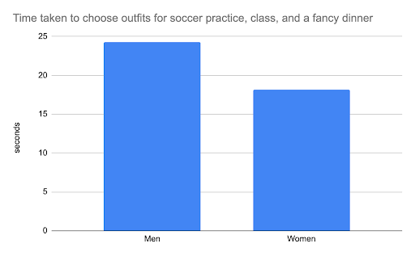
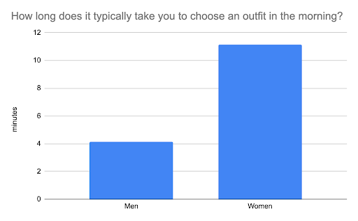

User Research
Design
Prototyping
Experimentation
Developed as part of a course project, HangSmart combines user-centered design principles with physical prototyping to reduce decision fatigue and save time.
HangSmart revolutionizes morning routines by providing quick, intelligent outfit suggestions tailored to the user’s calendar, weather, and personal preferences.


This was a Project for a Human Computer Interaction course (COSC 067)
Our prompt is a blend of two:
Making Life Easier, Calmer, More Joyful:
How might technology make
our life more joyful? How might technology help us stay calm or monitor our emotions more effectively?
Resilience
in a Changing Environment:
How might technology make us more resilient in a fast-paced world? How
might technology help us adapt to climate change? How might technology help the environment respond to
climate change in ways that make it more adaptable?
Our user interview and analysis:
Conducted surveys and interviews to understand how people prepare for their day.
Explored challenges
like choosing outfits for different occasions, weather conditions, and packing for trips.
Developed a Figma prototype to create a digital interface for outfit suggestions.
Designed the
interface with simplicity and accessibility in mind, using user feedback to iterate on the design
Built a physical closet using Home Depot travel boxes and Arduino-controlled RGB LED strips.
Integrated
the LED lighting system with a Wizard of Oz testing setup, where lights were manually controlled to
simulate automation.
Our interviews indicated that the following features would fill a need:
Closet calendar synchronization
Wardrobe recommendation
Helpful reminders
Outfit Suggestions:
Based on calendar events, weather, and user preferences.
Physical Closet
Integration:
LED lighting on hangers highlights selected outfits for easier decision-making.
Digital
Interface:
Simple, intuitive UI designed for quick navigation and outfit selection.
There are two main components to the prototype the physical closet with LEDs and the interface panel. Within the interface things like the day’s events and weather, would serve to form suggestions on what to wear and pack for the day. Creating outfits based on this info. The suggested outfits and things to pack would then be indicated through the illuminating of the corresponding LED with in the closet, allowing for quick identification.
Conducted user tests comparing the time taken to choose outfits with and without the HangSmart
system.
Measured satisfaction and willingness to adopt the system through Likert-scale surveys.
Do you think a product like this would help you save time when getting ready in the morning? (Y/N)
Male: 10/12
How interested would you be to use a system like this in the future? (Likert)
Male: 3.58/5
How satisfied are you with your morning routine? (Likert)
Male: 3.42/5
Survey Findings:
Average satisfaction with morning routines: ~3.4/5.
Willingness to adopt the
system in the future: 4.86/5 (female participants), 3.58/5 (male participants).
94% of users believed
the system could save them time.
User Feedback:
Participants found HangSmart helpful in
simplifying outfit planning and expressed interest in future iterations that integrate with personal closets
and calendars.
My Role
Conducted user research and analysis to inform design decisions.
Led the development of
the user digital interface design and usability testing.

I received a citation in recognition of the work that I put into this group project.